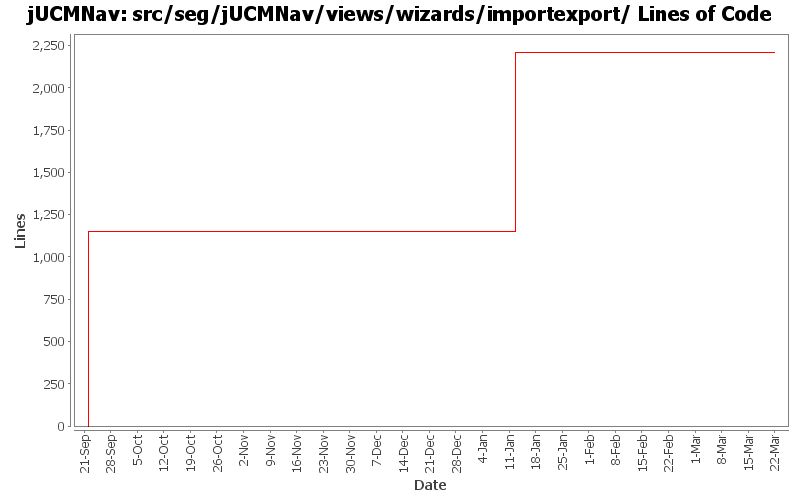

Summary Period: 2005-09-22 to 2006-03-21
[root]/src/seg/jUCMNav/views/wizards/importexport

Total Lines Of Code:
2207 (2006-03-31 18:01)
| Author | Changes | Lines of Code | Lines per Change |
|---|---|---|---|
| Totals | 58 (100.0%) | 2207 (100.0%) | 38.0 |
| jkealey | 28 (48.3%) | 2207 (100.0%) | 78.8 |
| jfroy | 30 (51.7%) | 0 (0.0%) | 0.0 |
Not sure why JF was closing editors loaded by the ImportWizard, but he was doing it even if the editor had not been opened. added an extra flag to prevent it from being closed when the ImportWizard did not explicitely open it.
0 lines of code changed in:
bug 417: import wizard: overwrite doesn't work if file is open
0 lines of code changed in:
Modification of the import autolayout mechanism(added vector for diagrams to do autolayout)
Fixed 2 tests broke in previous commit.
0 lines of code changed in:
Fixed javadoc problems
0 lines of code changed in:
Externalize String
0 lines of code changed in:
Fixed bug 415
0 lines of code changed in:
Fixed bug 416
0 lines of code changed in:
Fix bug in ExportWizard with filename prefix and postexporter option
0 lines of code changed in:
End of modification of the extension point
0 lines of code changed in:
Modification of the import extension point to support importing model in selected files or in a new file.
0 lines of code changed in:
Added option to import URN element in the selected file. Added option to autolayout only imported diagrams.
0 lines of code changed in:
Modified Export wizard to choose filename when exporting the urn model
0 lines of code changed in:
Added first version of the GRL catalog import/export
0 lines of code changed in:
bug 409: DXL export now works fine; upgraded the ExportWizard UI to show other maps in same file when you run the export action on one map only.
0 lines of code changed in:
changed a few places where we work with progress monitors after reading article on eclipse.org
0 lines of code changed in:
Imported Yong Dae Kim's DXL export class. Refactored it a bit and cleaned it up to make it easier to read.
Changed export extension point to support saving the bitmaps immediately after the DXL file.
0 lines of code changed in:
Fixed bugs 400, 401, 403 and 404
- Added GRL export as images
0 lines of code changed in:
Extracted a bunch of strings, translated language files to French.
0 lines of code changed in:
fixed javadoc
0 lines of code changed in:
I had forgotten to remove a few links and implement a few lines of code relating to the import/export infrastructure changes.
0 lines of code changed in:
(3 more)
Generated by StatCVS 0.2.4